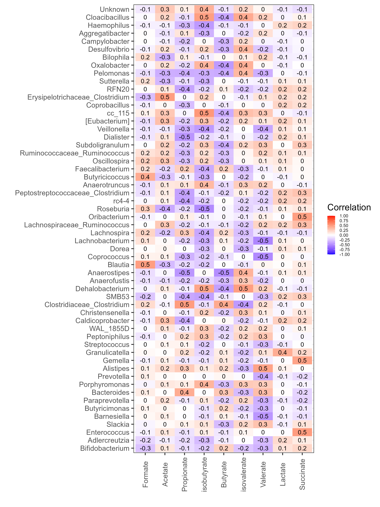

Chapter 6 Figure 6
Cross correlation of 16S and lipid profiles
6.1 Libraries
library(microbiome)
library(phyloseq)
library(dplyr)
library(reshape2)##
## Attaching package: 'reshape2'## The following object is masked from 'package:tidyr':
##
## smithslibrary(DT)6.2 Preprocess genus table
#load in phyloseq object
load("./data/preprocess_physeq")
#subset samples to remove rnalater unwashed samples
physeq <-
subset_samples(physeq, !(RNAlater_washed_status == "unwashed"))
#Subset samples to remove samples with NA lipid info
physeq <- subset_samples(physeq, !(Formate.MM. == "NA"))
#Remove anything that is not bacteria
physeq <- subset_taxa(physeq, Phylum != "Bacteria")
#Clostridium
#Get logical vector to know which rows
clos_subset_vector <- as.vector(replace((tax_table(physeq)[,"Genus"] == "Clostridium"),
is.na(tax_table(physeq)[,"Genus"] == "Clostridium"),
FALSE))
#Extract taxa names
clos_taxa_names <- taxa_names(physeq)[clos_subset_vector]
#Make new genus names for clositriudm
clos_new_genus_name <- paste(tax_table(physeq)[clos_taxa_names,"Family"],
tax_table(physeq)[clos_taxa_names,"Genus"],
sep = "_")
tax_table(physeq)[clos_taxa_names,"Genus"] <- clos_new_genus_name
#Ruminococcus
#Remove instances of square brackets
clos_subset_vector <- as.vector(replace((tax_table(physeq)[,"Genus"] == "[Ruminococcus]"),
is.na(tax_table(physeq)[,"Genus"] == "[Ruminococcus]"),
FALSE))
#Remove []
clos_taxa_names <- taxa_names(physeq)[clos_subset_vector]
tax_table(physeq)[clos_taxa_names,"Genus"] <- "Ruminococcus"
#Get logical vector to know which rows
clos_subset_vector <- as.vector(replace((tax_table(physeq)[,"Genus"] == "Ruminococcus"),
is.na(tax_table(physeq)[,"Genus"] == "Ruminococcus"),
FALSE))
#Extract taxa names
clos_taxa_names <- taxa_names(physeq)[clos_subset_vector]
#Make new genus names for clositriudm
clos_new_genus_name <- paste(tax_table(physeq)[clos_taxa_names,"Family"],
tax_table(physeq)[clos_taxa_names,"Genus"],
sep = "_")
tax_table(physeq)[clos_taxa_names,"Genus"] <- clos_new_genus_name
#Convert to genus table
physeq <- aggregate_taxa(physeq, "Genus")
#Extract genus table to a df
genus_df <- as.matrix(otu_table(physeq))
#transpose
genus_df_t <- as.matrix(t(genus_df))
#log10 the values
genus_df_t_log10 <- log10(genus_df_t)
#extract lipid table
lipid_mat <-
as.matrix(meta(physeq)[,grepl(".MM.",colnames(meta(physeq)))])
#remove .MM. from colnames
colnames(lipid_mat) <-
gsub(pattern = ".MM.", replacement = "", colnames(lipid_mat))
#Remove "_b" from sample names
row.names(lipid_mat) <- gsub(pattern = "_b", replacement = "",
row.names(lipid_mat))
row.names(genus_df_t_log10) <- gsub(pattern = "_b", replacement = "",
row.names(genus_df_t_log10))
#Save object
save(genus_df_t_log10, file = "./data/16s_and_lipid_genus_physeq")
save(lipid_mat, file = "./data/lipid_matrix")6.3 All buffers
6.3.1 Correlation
#load in phyloseq object
load("./data/16s_and_lipid_genus_physeq")
load("./data/lipid_matrix")
#Correlation
correlation.table <- associate(
genus_df_t_log10,
lipid_mat,
method = "spearman", mode = "table",
p.adj.threshold = 0.05, n.signif = 1)
#Add column names
colnames(correlation.table)[1:2] <- c("Genus","Lipid")
#Write table with significant hits to file
write.table(correlation.table[correlation.table$p.adj < 0.05,],
file = "./data/Genus_lipid_sig_correlation.csv",
row.names = FALSE, sep = ",", quote = FALSE,
col.names = TRUE)
#Display table with significant hits below
datatable(correlation.table[correlation.table$p.adj < 0.05,],
options = list(pageLength = 50) )6.3.2 Heatmap
theme_set(theme_bw(20))
df <- correlation.table
p <- ggplot(df, aes(Genus, Lipid, group=Lipid))
p <- p + geom_tile(aes(fill = Correlation))
p <- p + geom_text(aes(fill = df$Correlation, label = round(df$Correlation, 1)), size = 5)
p <- p +
scale_fill_gradientn("Correlation",
breaks = seq(from = -1, to = 1, by = 0.25),
colours = c("blue", "white", "red"),
limits = c(-1, 1)) +
theme(axis.text.x = element_text(angle = 90, vjust = 0.5),
legend.text=element_text(size=10)) +
labs(x = "", y = "")
ggsave(plot = p,
filename = "./figures/Genus_lipid_corr_heatmap.png",
device = "png", units = "mm",
height = 200, width = 400, dpi = 300)